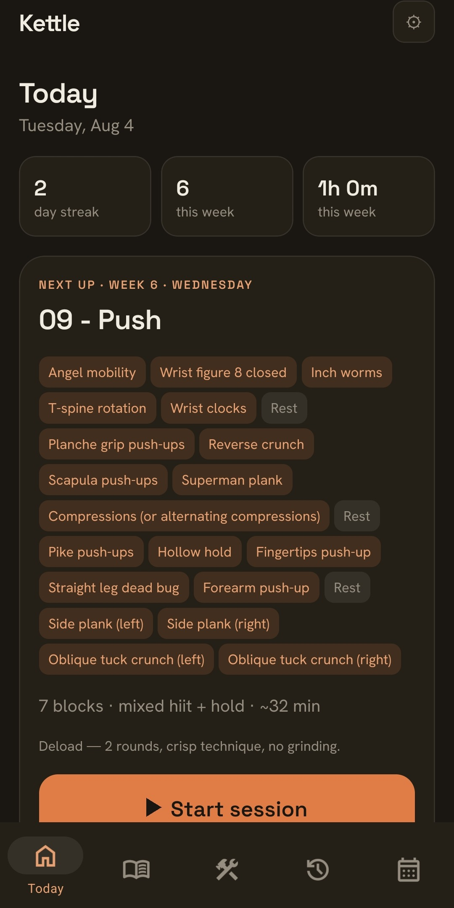
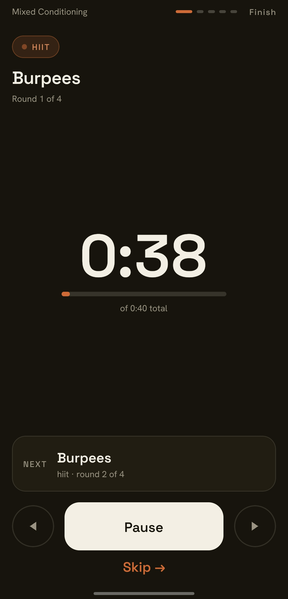
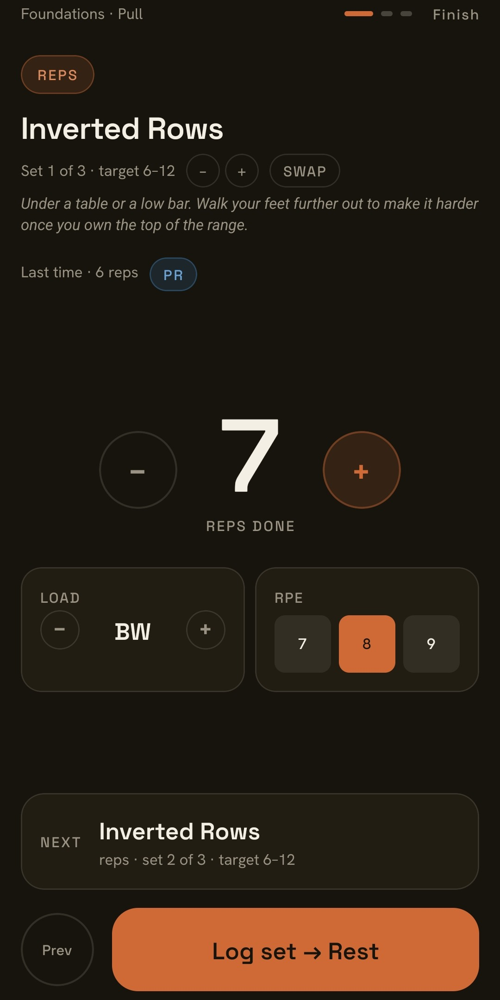
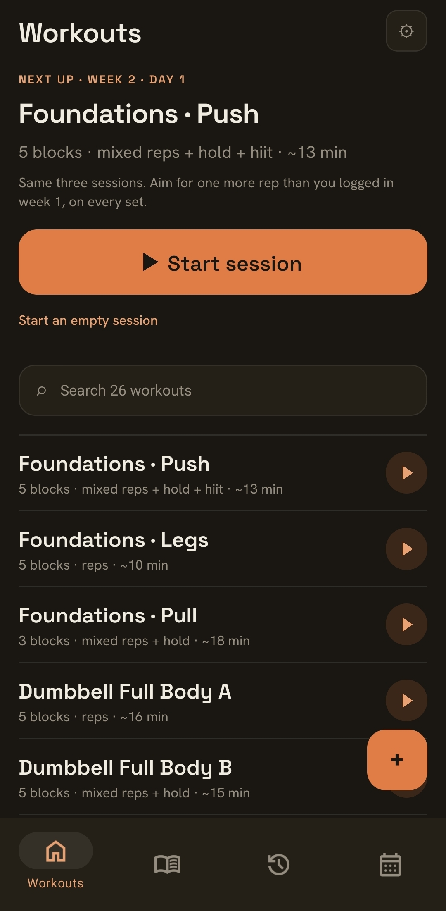
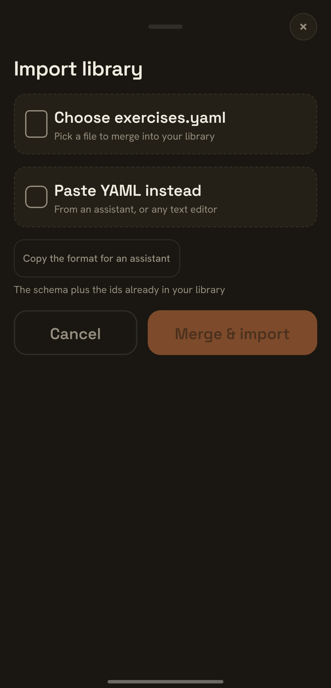
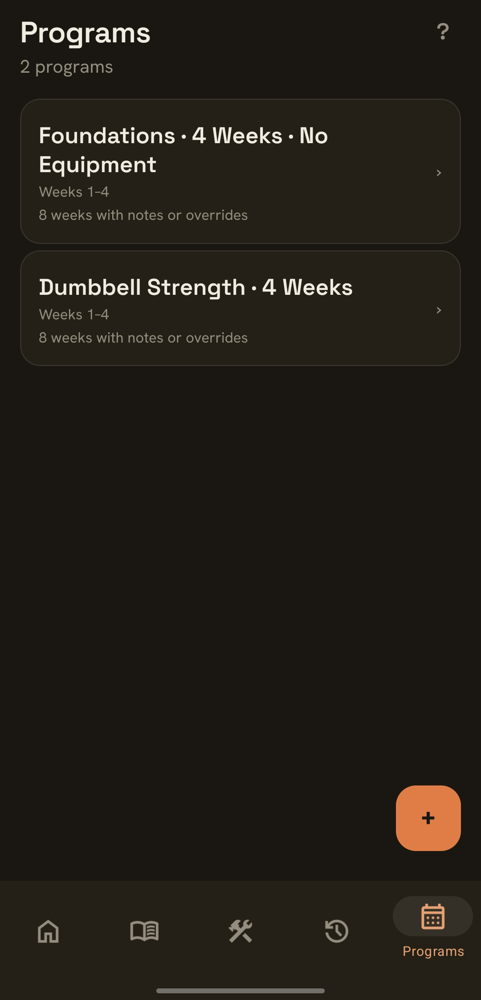
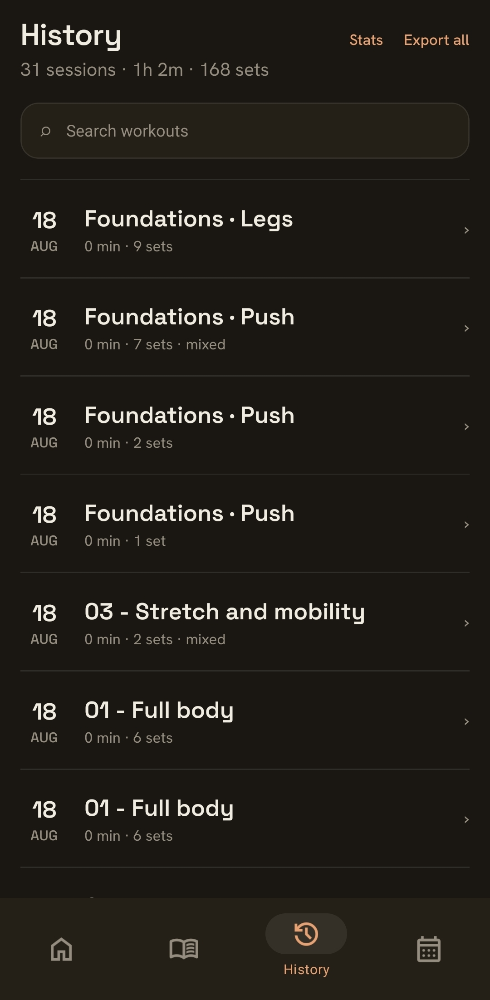

Workout tracker · Android
Lifting and conditioning, on one timer.
Reps, HIIT, EMOM, AMRAP, timed holds and cardio in a single session, run by one wall-clock engine. It shows what you lifted last time, takes another set or a swapped exercise mid-workout, and starts with nothing planned if that is the kind of day it is. Your library is a plain YAML file you own, and nothing leaves the device.
version: 1
exercises:
- id: back-squat
name: Back Squat
type: reps
config:
sets: 5
target_reps_min: 5
target_weight: 100
rest_sec: 180
notes: stop 2 reps shy of failure
- id: burpees
name: Burpees
type: hiit
config:
work_sec: 30
rest_sec: 15
rounds: 8
workouts:
- id: lower-a
name: Lower A
blocks:
- type: exercise
exercise: back-squat
- type: exercise
exercise: burpees
programs: []
What it does
A runner that keeps up with the session you're actually having.
One session, every kind of work
Lifting and conditioning run on the same timer. Reps sets take a count, a load and an RPE; timed blocks — HIIT, EMOM, AMRAP, holds — run a live countdown with the next block always in view. Timing is anchored to the wall clock, so it survives you leaving the app, and audio cues mean you rarely need to look at the screen.
It bends, too. Add a set when you have another one in you, drop one when you don't, or swap an exercise when the rack is taken — mid-workout, without editing anything. Walked in with no plan? Start an empty session and add as you go.


The library, as YAML
Your exercises and workouts are one editable file. Read it, diff it, keep it in a repo, edit it in any text
editor. Import takes a file or pasted text and merges by id, so you can accept a
library from anywhere without losing your own log. Export the whole thing whenever you want.
Read the format reference →
Or start from a ready-made library →


Multi-week programs
Group workouts into a program that runs across weeks, with per-week overrides — add a set, bump a target, swap a block — expressed as diffs against the base workout. Kettle queues the next day for you; the file stays the source of truth.

It remembers what you lifted
The set row shows what you did last time — "60 kg × 8", on the set you're on — and one tap makes it the new target, written back to your library so next week starts there. Beat your best and the row says so; finish and the summary names the record and an estimated 1RM.
All of it is read back on the device from your own log: every finished set appends there with the date and what you actually did, nothing is uploaded, and you can export the whole thing as plain data any time.

Seven exercise types
Each type is a shape of block, with its own config fields.
Sets of counted repetitions, with load and an optional target range.
Alternating work and rest intervals over a number of rounds.
Every minute on the minute — a fixed task at the top of each minute.
As many rounds or reps as possible inside a time cap.
Hold a position — planks, hangs, carries. Ends itself at the target, or runs to failure without one.
A continuous effort tracked by time or distance.
An explicit rest block between efforts, timed to the second.
Bring your own assistant
Generate a program elsewhere. Paste it straight in.
Because the library is a documented YAML format with a published JSON schema, any AI assistant can write a valid program for you. Give it the format reference, describe your training, and paste the result into Kettle.
Kettle itself has no AI features and never calls a model. This works because the format is open and legible — not because anything phones home.
Open the format referenceThe app collects nothing and calls no external service, including no model. Whatever an assistant produces is checked against the schema on import, on your device.
Paste the format reference — or point the assistant at this site — so it knows the file shape and the seven types.
Describe your goal in plain words: “a 4-week push/pull/legs program, dumbbells only, 40 minutes.”
It returns YAML. Import it into Kettle, which validates against the schema and merges by
id.
Edit anything by hand afterwards. The file stays yours to read and change.
Your data
Nothing leaves the device.
Kettle is backend-free by design. There is no account to create and no cloud to trust, because there is no cloud. The competitors sync to a server; Kettle keeps your training where you can see it.
No account
Install and start. There is no sign-up, no email, no password to reset.
No server
The app has no backend to talk to. Your library and log live in local storage on your phone.
Export anytime
Pull your whole library or your session history out as plain files whenever you want. It's yours.
Nothing transmitted
Zero analytics and zero trackers. The app makes no network requests — this site doesn't either.